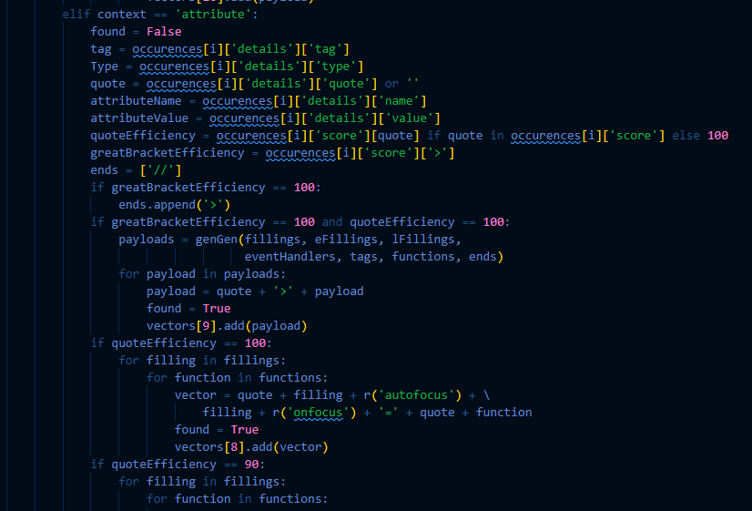
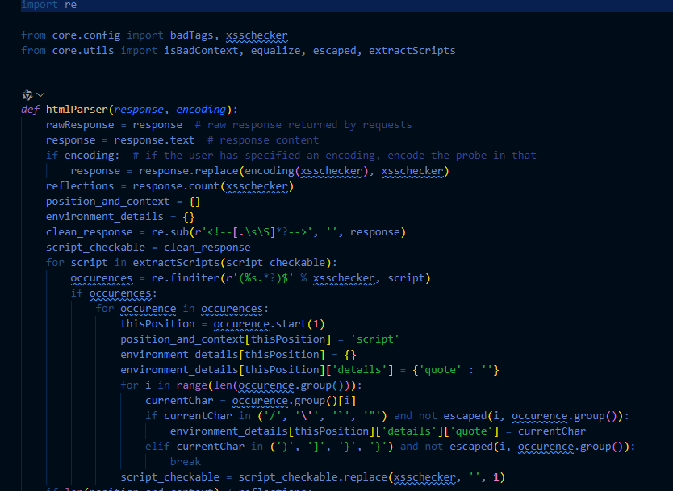
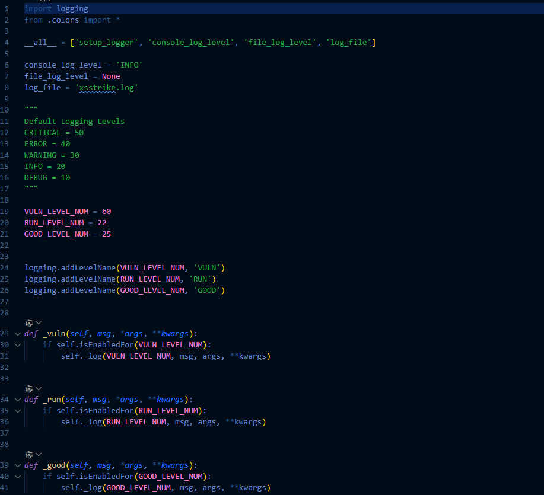
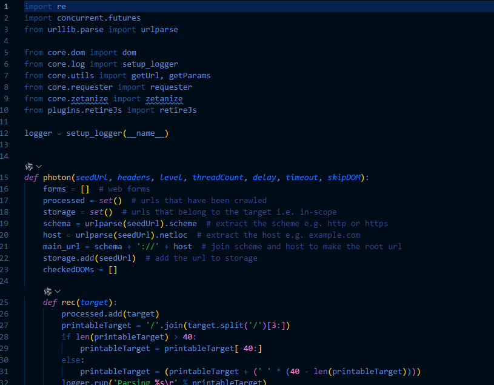
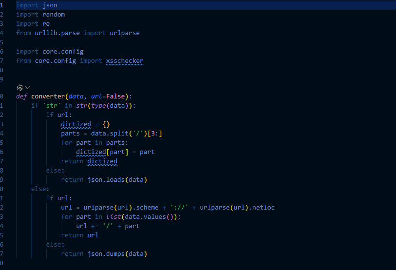
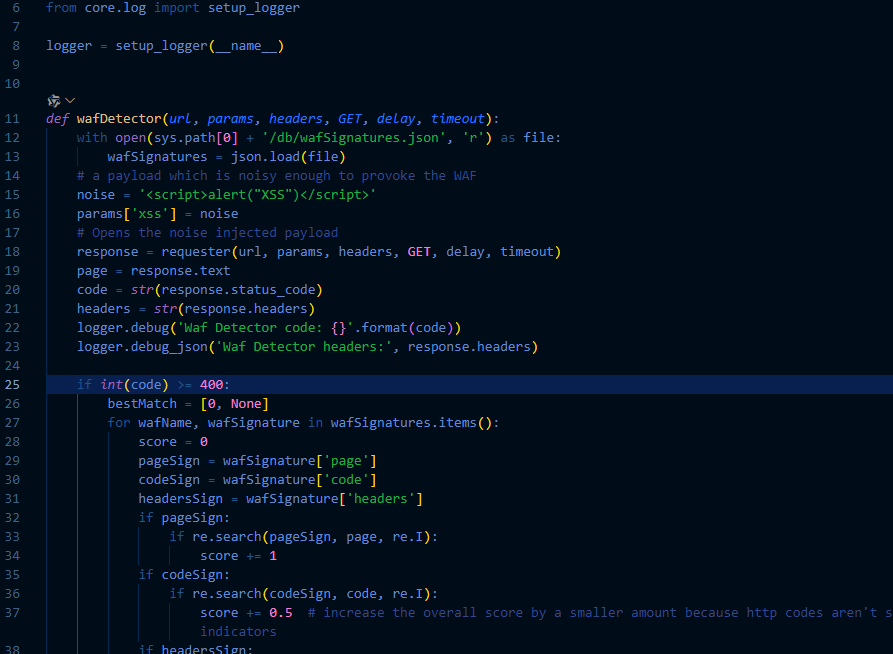
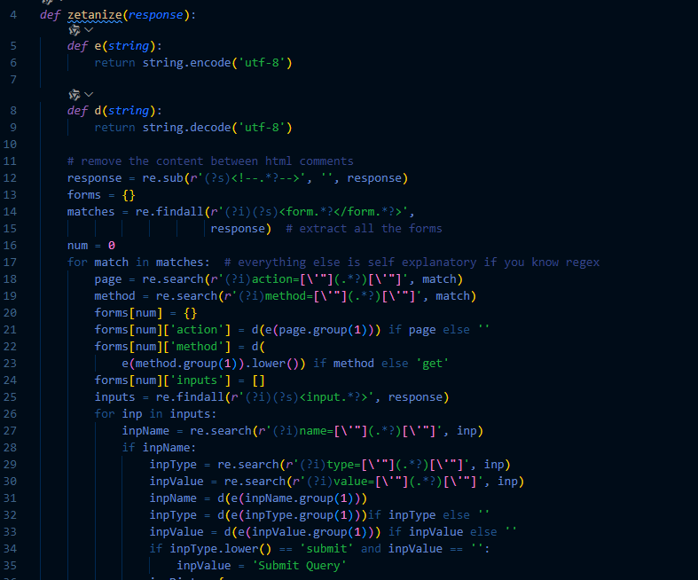

XSStrike
主程序入口
总体上可以由如下形式的代码概括说明：
1 | #!/usr/bin/env python3 |
主要功能:
- 程序入口点配置
- 命令行参数解析
- 调用不同的扫描模式
- 版本更新检查
XSS检测验证模块 (core/checker.py)
该模块用于验证XSS漏洞是否存在，通过注入特殊标记并检查响应。
1 | def checker(url, params, headers, GET, delay, payload, positions, timeout, encoding): |
详细功能说明:
- 生成随机的检查字符串(checkString)，用于验证XSS漏洞
- 修改payload，添加特殊标记以便在响应中识别
- 根据不同的环境(如属性值、HTML上下文)对payload进行适当的转义
- 支持针对特定位置的XSS测试
- 发送包含payload的请求并返回响应
- 通过检查响应中是否包含特殊标记来判断XSS是否成功
终端颜色输出模块 (core/colors.py)
该模块定义了各种ANSI颜色代码，用于在终端中输出彩色文本，提高用户体验。
概括性代码如下：
1 | #!/usr/bin/env python3 |
详细功能说明:
- 根据操作系统自动判断是否支持彩色输出
- 定义了多种颜色代码：白色、绿色、红色、黄色等
- 定义了特殊标记：信息(info)、问题(que)、错误(bad)、成功(good)、运行(run)
- 在不支持彩色输出的系统上自动禁用颜色
- 提供了统一的颜色接口，方便其他模块使用
全局配置模块 (core/config.py)
该模块包含了XSStrike的全局配置参数，定义了各种默认设置和常量。
1 | changes = '''Negligible DOM XSS false positives;x10 faster crawling''' |
详细功能说明:
- 定义了全局变量和常量，如XSS检查字符串(xsschecker)、线程数、超时时间、代理设置等
- 定义了常见的参数名列表，用于参数发现和测试
- 定义了常见的事件处理函数以及它们的标签，以及用于触发弹窗的js代码
- 定义了常见的用于绕过过滤和waf的payload集合
- 定义了特别容易受到盲XSS攻击的参数列表
- 设置了默认的HTTP请求头，模拟正常浏览器行为
- 提供了生成随机字符串的函数，用于创建唯一标识符
- 这些配置为整个工具提供了基础设置和常量值
DOM XSS扫描模块 (core/dom.py)
该模块专门用于检测DOM XSS漏洞，通过分析JavaScript代码中的危险源和接收器。
1 | def dom(response): |
详细功能说明:
- 分析HTTP响应中的JavaScript代码，寻找DOM XSS漏洞
- 定义了两个正则表达式：
- sources: 匹配可能的XSS源，如document.URL、location.href等
- sinks: 匹配可能的XSS接收器，如eval、innerHTML等
- 从响应中提取所有
<script>标签内的JavaScript代码 - 分析每个脚本，寻找潜在的源和接收器
- 特别关注document.write方法，这是一个常见的DOM XSS漏洞点
- 如果同时发现源和接收器，则认为存在DOM XSS漏洞
- 记录所有发现的潜在漏洞点
编码模块 (core/encoders.py)
该模块提供各种编码函数，用于对XSS有效载荷进行编码，以绕过过滤和WAF。
1 | def base64(string): |
仅提供了base64的编码绕过
过滤器检测模块 (core/filterChecker.py)
该模块用于检测目标网站对特定字符的过滤情况。
1 | def filterChecker(url, params, headers, GET, delay, occurences, timeout, encoding): |
详细功能说明:
-
默认加入
< 和 > ，因为这些符号在 HTML 注释、标签、属性等上下文中都很关键。 -
计算每个注入点中特定字符的出现效率
-
根据字符出现情况判断注入点的环境类型：
-
如果<和>都存在，检查是否在HTML标签内
-
如果在标签内，进一步判断是在普通HTML环境还是在script标签内：如果漏洞出现在 HTML 注释中（
<!-- 注释 -->），那么--> 可能是关键字符，因为可以用来终止注释。如果漏洞出现在<script>内部：
- 添加可能影响解析的引号（
" 或'）。 - 添加
</scRipT/>，可能用于** 闭合 `` 标签</strong> ** ，使后续代码变成 HTML。
- 添加可能影响解析的引号（
-
如果没有特殊字符，则认为是在JavaScript环境中
-
返回每个注入点的环境类型，用于后续生成适合的XSS有效载荷
-
这种分析有助于确定最有效的XSS攻击向量
模糊测试模块 (core/fuzzer.py)
该模块通过发送各种字符和模式来测试目标网站的过滤和响应情况。
1 | def fuzzer(url, params, headers, GET, delay, timeout, WAF, encoding): |
详细功能说明:
- 使用一系列预定义的XSS向量测试目标网站
- 每个向量都有不同的复杂度和绕过技术
- 支持base64编码方式
- 发送每个向量并分析响应，检查向量是否被过滤或修改
- 计算每个向量的效率，即成功率
- 如果向量成功，还会测试向量中的单个字符，以确定哪些字符被允许
- 返回成功的向量和每个位置的总体效率
- 这些信息用于后续生成更有效的XSS有效载荷
有效载荷生成器 (core/generator.py)
该模块根据之前的测试结果生成定制的XSS有效载荷。

详细功能说明:
- 根据之前的测试结果生成定制的XSS有效载荷
- 根据不同的上下文(HTML、属性、注释、脚本、样式)生成不同的有效载荷
- 使用不同的标签、事件处理器和填充字符创建多样化的有效载荷
- 对每个有效载荷分配优先级(1-11)，优先级越高，成功率越高
- 支持多种格式的有效载荷，如img、svg、script等
- 对于JavaScript上下文，使用jsContexter分析脚本并生成适当的闭合字符串
- 对于属性上下文，根据属性名和引号类型生成不同的有效载荷
- 返回按优先级分组的有效载荷集合
HTML解析模块 (core/htmlParser.py)
该模块解析HTML响应，确定XSS检查点的上下文。

详细功能说明:
-
分析HTTP响应中XSS检查点的上下文环境
-
使用正则表达式识别不同的上下文:
- 脚本上下文: 检查点在
<script>标签内 - 属性上下文: 检查点在HTML标签的属性中
- HTML上下文: 检查点在HTML标签之间的文本中
- 注释上下文: 检查点在HTML注释中
- 样式上下文: 检查点在
<style>标签内
- 脚本上下文: 检查点在
-
对于每个上下文，提取详细信息:
- 标签名称
- 属性名称(如果在属性中)
- 引号类型(单引号、双引号或无引号)
-
返回包含所有检查点上下文信息的字典
-
这些信息对于生成有效的XSS有效载荷至关重要，因为不同上下文需要不同的有效载荷格式
JavaScript上下文分析模块 (core/jsContexter.py)
该模块分析JavaScript代码，确定如何闭合JavaScript上下文以注入XSS有效载荷。
1 | def jsContexter(script): |
详细功能说明:
-
分析JavaScript代码中XSS检查点的上下文
-
将代码分割为检查点前后的部分
-
根据检查点前后的字符确定适当的闭合字符串:
- 如果前面是=或/*，使用""+闭合
- 如果前面是+，使用""闭合
- 如果前面是<或后面是<，使用//闭合(注释)
- 如果前面是-或–或后面是-，使用//闭合
-
返回适当的闭合字符串，用于构建有效的JavaScript XSS有效载荷
-
这种分析确保生成的有效载荷能够正确闭合JavaScript上下文并执行
日志记录模块 (core/log.py)
该模块提供日志记录功能，用于记录扫描过程中的信息、警告和错误。

详细功能说明:
-
设置基本的日志配置，将日志写入xsstrike.log文件
-
创建自定义格式化器，为不同级别的日志添加颜色和前缀
-
定义日志级别:
- info: 一般信息，使用黄色[!]前缀
- warning: 警告信息，使用蓝色[?]前缀
- error: 错误信息，使用红色[-]前缀
- debug: 调试信息，使用白色[~]前缀
- critical: 严重错误，使用红色[-]前缀
- good: 成功信息，使用绿色[+]前缀
- run: 运行信息，使用白色[~]前缀
-
提供setup_logger函数，为每个模块创建自定义日志记录器
-
同时将日志输出到控制台和日志文件
-
这种日志系统使得扫描过程更加透明，便于调试和问题排查
网站爬虫模块 (core/photon.py)
该模块实现了一个简单的网站爬虫，用于发现潜在的XSS注入点。

详细功能说明:
-
实现网站爬虫功能，从种子URL开始爬取网站
-
支持多级爬取，通过level参数控制爬取深度
-
使用多线程并行爬取，提高效率
-
提取网页中的所有表单:
- 表单的action属性
- 表单的method属性(GET或POST)
- 表单中的所有input字段
-
提取网页中的所有链接，并过滤掉JavaScript链接和锚点链接
-
处理相对路径，将其转换为绝对路径
-
只爬取同一主机名下的URL，避免爬取外部网站
-
返回发现的所有表单和URL
-
这些信息用于后续的XSS扫描，提供潜在的注入点
用户交互模块 (core/prompt.py)
该代码实现了一个交互式文本编辑器输入功能，允许用户在外部文本编辑器（如 nano 或 vim）中输入内容，并在编辑完成后返回输入的文本。
1 | def prompt(default=None): |
功能：使用外部文本编辑器让用户输入内容，并返回编辑后的文本。
关键技术：
-
tempfile 创建临时文件存储输入内容。 -
os.fork() 创建子进程打开编辑器。 -
os.execvp() 启动编辑器并传入临时文件。 -
os.waitpid() 等待用户完成编辑。
适用场景：- 适用于 命令行工具（如安全测试工具
XSStrike）。 - 让用户更方便地输入复杂数据（如 SQL、HTML、代码片段等）。
- 适用于 命令行工具（如安全测试工具
HTTP请求模块 (core/requester.py)
该模块处理所有HTTP请求，是工具与目标网站交互的核心。
1 | def requester(url, data, headers, GET, delay, timeout): |
详细功能说明:
-
处理所有HTTP请求，支持GET和POST方法
-
实现请求延迟功能，避免过快发送请求导致被封
-
使用随机User-Agent，模拟不同的浏览器
-
支持自定义请求头
-
支持代理服务器，通过proxies配置
-
处理各种请求异常:
- 超时
- 连接拒绝
- 过多重定向
- 其他请求异常
-
忽略SSL警告，允许访问自签名证书的网站
-
返回响应对象或在出错时返回None
-
这个模块是整个工具的基础，所有与目标网站的交互都通过它进行
更新模块 (core/updater.py)
该模块用于检查和更新XSStrike到最新版本。
详细功能说明:
-
检查XSStrike是否有新版本可用
-
支持两种更新方式:
- 通过Git更新(如果是Git仓库)
- 通过下载ZIP文件更新(如果不是Git仓库)
-
根据操作系统选择不同的下载和解压方法:
- Windows: 使用PowerShell命令
- Linux/Mac: 使用wget/curl和unzip命令
-
显示更新前后的版本信息
-
处理更新过程中可能出现的错误
-
这个模块确保用户能够使用最新版本的XSStrike，获取最新的功能和漏洞修复
工具函数模块 (core/utils.py)
该模块包含各种辅助函数，供其他模块使用。

详细功能说明:
-
提供各种辅助函数，供其他模块使用:
- extractHeaders: 从字符串中提取HTTP头
- getUrl: 从URL中提取基本URL(不含参数)
- getParams: 从URL或POST数据中提取参数
- randomString: 生成指定长度的随机字符串
- randomUpper: 随机将字符串中的字符转换为大写，用于绕过大小写过滤
- replacer: 替换字符串中的指定子串
- extractScripts: 从响应中提取所有JavaScript代码
- verboseOutput: 输出详细的响应信息，用于调试
- fillHoles: 填充新字符串中的空洞，用于构建有效载荷
- removeTags: 从HTML中移除所有标签
- converter: 转换数据格式，支持URL编码和解码
- genGen: 生成XSS有效载荷生成器，根据各种组件创建多样化的有效载荷
-
这些函数提供了基础功能，简化了其他模块的代码
-
通过这些工具函数，XSStrike能够更有效地处理URL、参数、HTTP头和有效载荷
WAF检测模块 (core/wafDetector.py)
该模块用于检测目标网站是否使用了Web应用防火墙(WAF)，以及WAF的类型。借助db目录下的wafSignatuers.json里面的waf签名
该代码是 Web 应用防火墙（WAF）检测模块，用于判断目标网站是否部署了 WAF，并尝试识别其具体厂商或类型。

详细功能说明:
-
检测目标网站是否使用了Web应用防火墙(WAF)
-
发送包含明显XSS有效载荷的请求，观察响应
-
分析响应状态码:
- 4xx状态码可能表示客户端错误，可能是WAF拦截
- 5xx状态码可能表示服务器错误，可能是WAF导致
-
使用预定义的WAF签名(来自db/wafSignatuers.json)检查响应头和响应体
-
如果匹配到WAF签名，识别并报告WAF类型
-
返回布尔值，表示是否检测到WAF
-
这种检测有助于确定后续扫描的策略，因为不同的WAF需要不同的绕过技术
表单处理模块 (core/zetanize.py)
该模块用于处理和分析HTML表单，提取表单字段和属性。

详细功能说明:
-
分析URL中的HTML表单，提取表单字段和属性
-
发送GET请求获取页面内容
-
使用正则表达式提取所有表单:
- 表单的action属性(提交目标)
- 表单的method属性(GET或POST)
- 表单中的所有input字段及其默认值
-
处理相对路径的action属性，将其转换为绝对路径
-
如果表单没有指定method，默认为GET
-
返回包含所有表单信息的字典，每个表单包含action、method和inputs
-
这些信息用于后续的表单测试，自动填充表单并提交，检测XSS漏洞
modes目录下文件分析
bruteforcer.py
bruteforcer.py 文件实现了一个暴力破解功能，用于测试网站参数对 XSS (跨站脚本) 攻击的脆弱性。它通过以下步骤工作：
- 接收目标 URL、参数数据、有效载荷列表和其他配置
- 确定请求类型（GET 或 POST）
- 解析 URL 和参数
- 对每个参数，使用提供的有效载荷列表进行测试
- 检查响应中是否包含有效载荷，如果包含则记录成功
主要函数：文件中定义了一个主要函数 bruteforcer，它接受以下参数：
- target: 目标 URL
- paramData: POST 请求的参数数据
- payloadList: 要测试的有效载荷列表
- encoding: 编码函数（如果需要对有效载荷进行编码）
- headers: HTTP 请求头
- delay: 请求之间的延迟时间
- timeout: 请求超时时间
crawl.py
crawl.py 实现了网站爬虫功能，用于发现网站中的表单和可能存在的 XSS 漏洞。
功能：
- 爬取网站表单
- 分析表单中的输入字段
- 对每个输入字段进行 XSS 测试
- 支持盲 XSS 测试
工作流程：
- 接收网站 URL 和表单数据
- 解析表单的 action URL，确保它是完整的 URL
- 提取表单中的输入字段
- 对每个输入字段，插入 XSS 检查器（xsschecker）
- 分析响应，检查 XSS 漏洞
- 如果发现漏洞，生成有效载荷并报告
- 如果启用了盲 XSS，则发送盲 XSS 有效载荷
scan.py
scan.py 是 XSStrike 的核心扫描模块，用于对单个 URL 进行全面的 XSS 漏洞扫描。
功能：
- 检测 DOM XSS 漏洞
- 检测 WAF（Web 应用防火墙）
- 分析参数反射位置
- 生成针对特定上下文的有效载荷
- 测试有效载荷的有效性
工作流程：
- 确定请求方法（GET 或 POST）
- 检查 DOM XSS 漏洞（如果未跳过）
- 检测 WAF
- 对每个参数进行测试：
- 插入 XSS 检查器
- 分析响应中的反射位置
- 分析反射的上下文（HTML、属性、脚本等）
- 生成针对特定上下文的有效载荷
- 测试有效载荷的有效性
- 报告成功的有效载荷
singleFuzz.py
singleFuzz.py 实现了模糊测试功能，用于测试目标对各种 XSS 相关字符和模式的响应。
功能：
- 检测 WAF
- 对每个参数进行模糊测试
- 使用预定义的模糊字符串列表
- 分析目标对不同输入的响应
工作流程：
- 确定请求方法（GET 或 POST）
- 检测 WAF
- 对每个参数进行模糊测试：
- 将参数值设置为 XSS 检查器
- 调用 fuzzer 函数进行模糊测试
- fuzzer 函数会使用预定义的模糊字符串列表，并分析响应
plugins目录下文件分析
retireJs.py
retireJs.py 是一个用于检测网页中使用的过时或有漏洞的 JavaScript 库的插件。 ----会调用db目录下的definitions.json文件
功能：
- 扫描网页中引用的 JavaScript 文件
- 检测这些 JavaScript 库是否存在已知的安全漏洞
- 提供有关发现的漏洞的详细信息，如 CVE 编号、严重性等
工作流程：
- 从网页响应中提取所有 JavaScript 文件的 URL
- 对于每个未检查过的 JavaScript 文件：
- 将其添加到已检查列表中
- 发送请求获取 JavaScript 文件内容
- 扫描文件内容，检查是否匹配已知的有漏洞的 JavaScript 库
- 如果发现漏洞，输出详细信息
dalfox
DalFox 是一个开源的 XSS(跨站脚本)扫描和参数分析工具，用 Go 语言编写。它能够自动发现 Web 应用程序中的 XSS 漏洞，并提供详细的分析报告。该工具支持多种扫描模式，包括单目标扫描、批量扫描、文件扫描等，并提供了丰富的自定义选项。
入口函数分析
项目的入口函数位于 dalfox.go 中：
1 | func main() { |
这个简单的入口函数调用了 cmd 包中的 Execute() 函数，该函数在 cmd/root.go 中定义，负责初始化命令行界面并执行用户指定的命令。Execute() 函数使用 Cobra 库来处理命令行参数和子命令。
目录结构和代码详细分析
cmd 目录
cmd 目录包含了命令行界面相关的代码，使用 Cobra 库实现命令行功能。
-
root.go:
- 定义了根命令和全局选项
- 实现了 Execute() 函数，作为程序的主入口点
- 通过 initConfig() 函数初始化配置，包括加载配置文件、设置命令行参数等
- 定义了大量的命令行选项，如 header、cookie、proxy 等，这些选项被存储在 Args 结构体中
- 实现了 HAR 文件写入器的初始化功能
-
args.go:
- 定义了 Args 结构体，用于存储用户通过命令行输入的各种选项
- 包含了多种类型的字段：字符串切片、字符串、整数和布尔值
- 这些选项涵盖了扫描配置、HTTP 请求设置、输出格式等各个方面
-
url.go:
- 实现了单一 URL 扫描模式的命令
- 通过 runURLCmd 函数处理单个 URL 的扫描
- 调用 scanning.Scan 函数执行实际的扫描操作
- 处理输出格式化，支持 JSON 和普通文本格式
-
file.go:
- 实现了从文件读取目标的扫描模式
- 支持多种文件格式，包括原始 HTTP 请求和 HAR 文件
- 通过 runFileMode 和 runRawDataMode 函数处理不同类型的文件输入
- 解析文件内容，提取目标 URL 和其他参数
-
pipe.go:
- 实现了从标准输入读取目标的扫描模式
- 允许通过管道将目标传递给 DalFox
- 支持批量处理多个 URL
-
payload.go:
- 实现了生成和枚举 XSS 有效载荷的命令
- 定义了 Object 结构体，用于表示不同类型的有效载荷
- 支持多种类型的 XSS 有效载荷生成，包括常见的、HTML 内的、属性内的和 JavaScript 内的
- 支持从远程源（如 Payloadbox 和 PortSwigger）获取有效载荷
- 提供了 URL 编码选项
-
server.go:
- 实现了 API 服务器模式，允许通过 HTTP API 使用 DalFox 功能
- 定义了服务器的主机和端口选项
- 调用 server.RunAPIServer 函数启动 API 服务器
lib 目录
lib 目录包含了供外部应用程序调用的库函数，使 DalFox 可以作为库被其他 Go 程序集成。
-
func.go:
- 提供了 Initialize 函数，用于初始化扫描选项
- 实现了选项合并逻辑，允许用户自定义选项覆盖默认值
- 返回 model.Options 结构体，包含了所有扫描配置
-
interface.go:
- 定义了 Options 结构体，作为库模式的配置接口
- 定义了 Target 结构体，表示扫描目标
- 定义了 Result 结构体，表示扫描结果
- 这些结构体使得 DalFox 可以作为库被其他 Go 程序调用
pkg 目录
pkg 目录包含了核心功能实现，分为多个子包。
scanning 包
-
scan.go:
- 实现了主要的扫描逻辑
- 定义了 Scan 函数，作为扫描的入口点
- 实现了参数分析、XSS 检测、其他漏洞检测等功能
- 处理不同类型的 XSS 有效载荷生成和测试
- 支持盲打 XSS 检测
- 实现了结果收集和报告生成
-
sendReq.go:
- 实现了 SendReq 函数，处理 HTTP 请求的发送和响应的处理
- 支持各种 HTTP 方法（GET、POST 等）
- 实现了响应内容的解析和分析
- 处理 gzip 压缩的响应
- 实现了漏洞检测逻辑，如 CRLF 注入、SSTI 等
-
parameterAnlaysis.go:
- 实现了参数分析功能，用于发现可能的注入点
- 支持字典和 DOM 分析
- 实现了参数挖掘功能，自动发现潜在的参数
- 检测参数反射点和类型
- 支持 WAF 检测
-
bav.go:
- 实现了基本漏洞分析(Basic Another Vulnerability)功能
- 包含 SSTI、CRLF、SQL 注入、开放重定向等漏洞的检测逻辑
- 使用并发处理多个请求
- 实现了不同类型的有效载荷生成
-
entity.go:
- 定义了各种实体和接口，如 XSS 参数、事件处理程序等
- 提供了获取不同类型实体的函数
- 实现了实体列表的管理和访问
-
grep.go:
- 实现了响应内容的正则匹配功能
- 定义了 Grepping 函数，用于检查模式
- 实现了内置的 grep 模式和自定义 grep 模式
- 支持多种漏洞的特征检测
-
codeview.go:
- 实现了代码查看功能，用于显示反射点
- 帮助用户理解漏洞的位置和上下文
-
foundaction.go:
- 实现了发现漏洞后的自定义操作
- 支持执行外部命令
- 支持发送通知
server 包
-
server.go:
- 实现了 REST API 服务器
- 使用 Echo 框架处理 HTTP 请求
- 定义了健康检查、扫描列表和扫描详情等端点
- 支持异步扫描
-
model.go:
- 定义了 API 服务器使用的数据结构
- 包含 Req 结构体，表示请求
- 包含 Res 结构体，表示响应
- 包含 Scans 结构体，表示扫描列表
har 包
-
client_tracer.go:
- 实现了 HTTP 请求跟踪功能，用于生成 HAR 文件
- 记录 HTTP 请求和响应的详细信息
- 跟踪 DNS 查询、TLS 握手等网络事件
- 计算各种时间指标
model 包
-
options.go:
- 定义了 Options 结构体，表示扫描选项
- 包含了所有配置选项，如 HTTP 头、Cookie、代理等
- 定义了 Scan 结构体，表示单次扫描的状态
- 定义了 PoC 结构体，表示漏洞证明
printing 包
-
util.go:
- 提供了输出格式化和显示控制的功能
- 实现了不同级别的日志输出
- 支持彩色输出
- 实现了进度显示
samples 目录
samples 目录包含了示例代码，展示如何使用 DalFox 作为库。
-
sample_lib.go.txt:
- 展示了如何在 Go 程序中使用 DalFox 库进行扫描
- 演示了如何设置扫描选项和执行扫描
- 展示了如何处理扫描结果
DalFox 和 XSStrike 整合分析
两个项目概述
DalFox
DalFox 是一个用 Go 编写的强大的开源 XSS 扫描器，专注于自动化。它具有多种扫描模式、参数挖掘、WAF 检测、DOM XSS 检测等功能。
XSStrike
XSStrike 是一个用 Python 编写的 XSS 扫描器，具有强大的有效载荷生成、WAF 检测和绕过、DOM XSS 检测等功能。
各自的优势
DalFox 优势
- 高性能并发架构：使用 Go 语言的并发特性
- 多种扫描模式：URL、SXSS（存储型 XSS）、文件、管道等
- 参数挖掘：能够自动发现潜在的参数
- 无头浏览器集成：使用 Chrome headless 进行 DOM XSS 验证
- 详细的报告：提供多种格式的报告
- 库模式：可以作为库集成到其他 Go 项目中
- WAF 检测和绕过：具有 WAF 检测和绕过功能
XSStrike 优势
- 高级有效载荷生成：能够生成更复杂的有效载荷
- 更强的 WAF 绕过能力：有专门的 WAF 绕过模块
- DOM 分析：更深入的 DOM 分析
- 爬虫功能：能够爬取网站发现更多的注入点
- 上下文感知的有效载荷：根据注入点的上下文生成有效载荷
整合方案
基础架构选择
建议以 DalFox 为基础架构进行整合，原因如下：
- Go 语言性能更好，并发处理能力强
- DalFox 的模块化设计更适合扩展
- DalFox 已经有良好的命令行界面和库模式支持
需要整合的功能
大致如下：
- 从 XSStrike 整合到 DalFox 的功能；
高级有效载荷生成；
增强的 WAF 检测和绕过；
爬虫功能；
上下文感知的有效载荷生成； - 命令行接口扩展。
- 配置结构扩展
具体实现步骤
-
创建爬虫模块
- 基于 XSStrike 的 crawl.py 创建 Go 版本的爬虫
- 集成到 DalFox 的扫描流程中
-
增强有效载荷生成
- 分析 XSStrike 的有效载荷生成逻辑
- 将其移植到 DalFox 的有效载荷生成模块中
- 添加上下文感知的有效载荷生成
-
增强 WAF 检测和绕过
- 整合 XSStrike 的 WAF 检测逻辑
- 改进 DalFox 的 WAF 绕过策略
-
DOM XSS 检测增强
- 结合两个项目的 DOM XSS 检测逻辑
- 增强 DalFox 的 headless 浏览器检测功能
-
报告生成改进
- 整合两个项目的报告格式
- 提供更详细的漏洞信息
通过以 DalFox 为基础，整合 XSStrike 的优势功能，可以创建一个更强大、更全面的 XSS 扫描工具。主要整合点包括：
-
爬虫功能
-
高级有效载荷生成
-
增强的 WAF 检测和绕过
-
上下文感知的有效载荷生成
这种整合将结合 Go 语言的高性能和 XSStrike 的高级功能，为用户提供更好的 XSS 扫描体验。建议从实现爬虫模块开始，然后逐步整合其他功能。